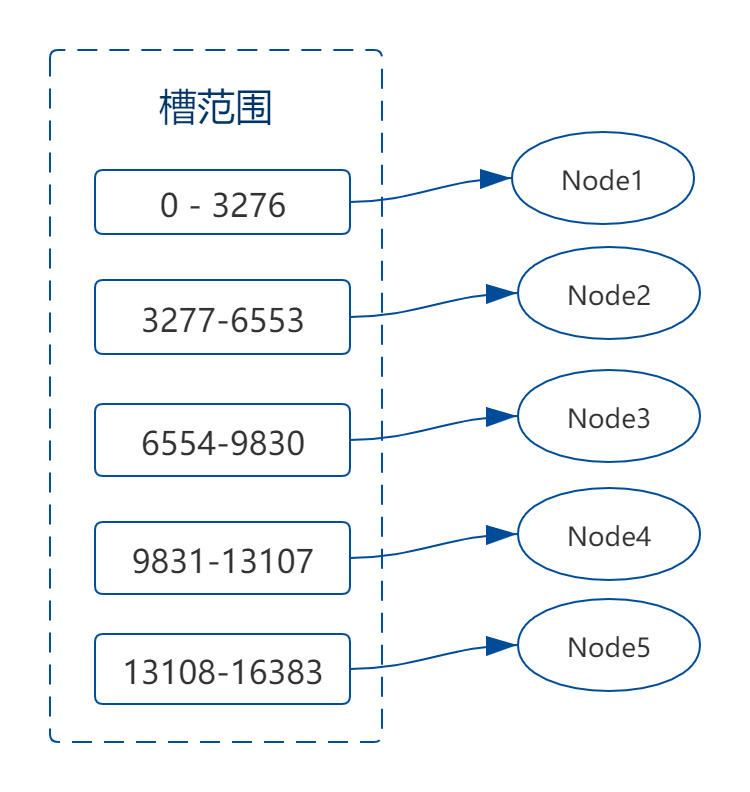

分布式进阶（十五）——分布式框架之高性能：Redis集群模式
Redis从3.0版本开始支持原生的集群模式，即 Redis Cluster。我在分布式理论基础篇中已经介绍过分布式集群。Redis Cluster其实就是一种数据分散集群架构，并可在此基础上进行读写分离。
Redis Cluster的主要功能如下：
- Master/Slave模式，支持N个master node，每个master node都可以挂载多个slave node，如果mater挂掉，redis cluster这套机制，就会自动将某个slave切换成master；
- 读写分离，对于每个master来说，写就写到master，然后读就从mater对应的slave去读；
Redis Cluster，主要是针对海量数据下的高并发、高可用场景，海量数据就是说单机Redis无法完全容纳，需要进行数据分片，这种场景建议就用Redis Cluster。
如果你的数据量很少，主要是承载高并发高性能的场景，比如缓存一般就几个G，那一个mater，多个slave，然后自己搭建一个sentinal集群，去保证Redis主从架构的高可用性就可以了。
一、数据分片
既然Redis Cluster属于数据分散集群架构，那么就需要对数据进行分片。Redis Cluster采用了hash slot算法来进行数据分片，这种算法其实就是我们在分布式理论篇中曾提到过的Range Based数据分片。
Redis在集群模式下，Hash值空间为[0, 16383]，也称为hash slot，每个Master节点会负责一定数量的分段（槽）。槽的计算方式为slot = CRC16(key) & 16383，这样就可以获得key对应的hash slot值：

Redis Cluster中的每个master都会持有部分slot：比如有3个master，那么可能每个master持有5000多个hash slot。当需要增加一个master时，就将其他master的hash slot移动部分过去；减少一个master时，就将它的hash slot移动到其他master上去，移动hash slot的成本是非常低的。
Redis客户端，比如Jedis，可以通过hash tag让不同的key，指向同一个hash slot。比如
set mykey1:{100}和set mykey2:{100}，则mykey1和mykey2对应同一个hash slot。
二、节点通信
Redis Cluster架构下，每个Ridis节点要放开两个默认端口号：6379和16379。16379端口用于节点间的通信，通信协议采用gossip协议。
2.1 gossip协议
Gossip协议的基本工作原理就是：节点彼此不断通信交换信息，一段时间后所有的节点都会知道集群完整的信息，有点类似于流言传播。
集群中的每个节点通过一定规则挑选要通信的节点，每个节点可能知道全部节点，也可能仅知道部分节点，只要这些节点彼此可以正常通信，最终它们会达到一致的状态。
gossip协议的好处是元数据的更新比较分散，不是集中在一个地方，这样降低了单节点的请求压力。缺点是元数据更新有延时，可能导致集群的一些操作会有一些滞后。
gossip协议包含多种消息：ping，pong，meet，fail等等。
meet消息
某个节点发送meet给新加入的节点，让新节点加入集群中，然后新节点就会开始与其他节点进行通信。

ping消息
ping消息用于节点的互相交换数据，进行元数据的更新。每个节点都会频繁给其他节点发送ping消息，其中包含自己的状态、自己维护的集群元数据。
每个节点每秒会执行10次ping，每次会选择5个最久没有通信的其他节点。如果发现某个节点通信延时达到了cluster_node_timeout/ 2，那么立即发送ping，避免数据交换延时过长。
由于ping很频繁，而且要携带一些元数据，所以可能会加重网络负担。
pong消息
ping和meet的返回消息，包含自己的状态和其他信息，也可以用于信息广播和更新。
fail消息
当某个节点判断另一个节点fail之后，就d发送fail给其他节点，通知其他节点该节点宕机了。
三、请求路由
Redis Cluster对客户端的通信协议做了比较大的修改，为了追求性能最大化，并没有采用代理的方式，而是采用客户端直连服务节点的方式。目前Redis的客户端主要有三种：Jedis、Redisson、Lettuce。我们以Jedis 为例，介绍下客户端与Redis Cluster交互的原理。
3.1 moved重定向
客户端可能会挑选任意一个Redis节点来发送命令，当Redis节点接收到命令后，会计算key对应的hash slot，如果就在当前节点则直接处理，否则返回moved指令给客户端，让客户端进行重定向。（由于Redis节点间通过gossip协议进行数据交换，所以每个节点都知道hash slot分布在哪个节点上）
用
redis-cli的时候，可以加入-c参数，支持自动的请求重定向，redis-cli接收到moved之后，会自动重定向到对应的节点执行命令。
3.2 缓存路由表
重定向很消耗网络IO，所以大部分的Redis客户端，都会在本地缓存slot -> node的映射关系，这样本地就可实现键到节点的查找，从而保证IO效率的最大化，只有当发生moved重定向时再更新本地的副本。
我们以Jedis为例，看下JedisCluster执行键命令的过程：
- 在JedisCluster初始化的时候，就会随机选择一个node，初始化
slot -> node映射表，同时为每个节点创建一个JedisPool连接池； - 每次基于JedisCluster执行操作，首先JedisCluster都会在本地计算key的hash slot，找到对应的节点；
- 如果那个node正好还是持有该hash slot，那么请求就完成；如果说进行了reshard（槽迁移）这样的操作，可能hash slot可能已经不在该node上了，就会返回
moved指令； - 如果JedisCluter API发现节点返回了
moved，就会利用该节点的元数据，更新本地的slot -> node映射表； - 重复上面几个步骤，直到找到真正的目标节点。如果重试超过5次，那么就报错：`JedisClusterMaxRedirectionException。
整个流程如下图：
Jedis老版本，可能会出现集群某个节点故障，还没完成自动切换恢复时，频繁更新hash slot，频繁ping节点检查活跃，导致大量网络IO开销。Jedis最新版本，对于这些过度的hash slot更新和ping，都进行了优化，避免了类似问题。
3.3 Ask重定向
如果请求到的那个节点正好在进行hash slot迁移，那么会响应Ask重定向给客户端。Jedis接收到Ask重定向后，会重新定位到目标节点去执行，但是因为Ask发生在hash slot迁移过程中，所以JedisCluster收到Ask后是不会更新hash slot本地缓存的。
ASK重定向：说明集群正在进行slot数据迁移，客户端无法知道什么时候迁移完成，因此只能是临时性的重定向，客户端不会更新slots缓存；
MOVED重定向：说明键对应的slot已经明确指定到新的节点，因此需要更新客户端slot缓存。
三、高可用
Redis Cluster的高可用原理，和哨兵模式是类似的。
3.1 故障发现
如果一个节点认为另外一个节点宕机，那么就是pfail，主观宕机。如果多个节点都认为另外一个节点宕机了，那么就是fail，客观宕机，跟哨兵的原理几乎一样。
在cluster-node-timeout内，某个节点一直没有返回pong，则被认为pfail。如果一个节点认为某个节点pfail了，那么会在gossip ping消息中，ping给其他节点，如果超过半数的节点都认为pfail了，那么就会变成fail。
3.2 主节点选举
对宕机的master node，会从其所有的slave node中，选择一个切换成master node。
slave node的过滤规则如下：
- 检查每个slave node与master node断开连接的时间，如果超过了
cluster-node-timeout * cluster-slave-validity-factor，那么就没有资格切换成master； - 每个slave node，都根据自己对master复制数据的offset，来设置一个选举时间，offset越大（复制数据越多）的slave node，选举时间越靠前，优先进行选举；
- 所有的master node给要进行选举的slave进行投票，如果大部分master node都投票给了某个从节点，那么选举通过，那个从节点可以切换成新master。
四、总结
Redis Cluster功能强大，相当于直接集成了主从模式和哨兵模式，同时又提供了数据分片和请求路由的功能。